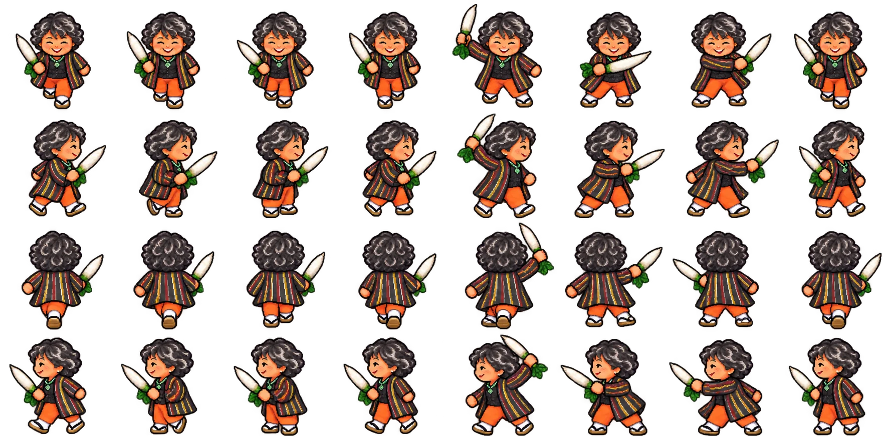
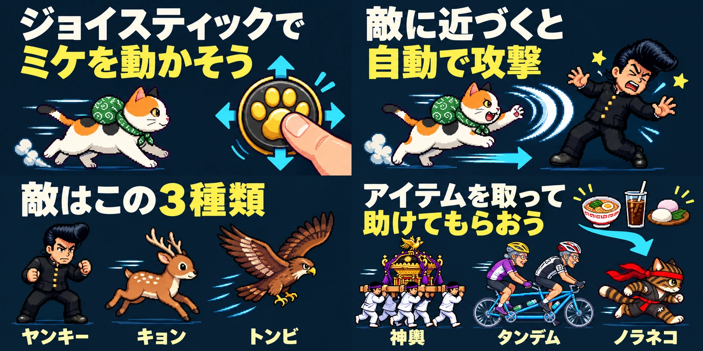

KATSUURA ASAICHI SURVIVOR · UI SYSTEM
勝浦朝市サバイバー
UI設計ガイド
ドット絵とSFC風のにぎやかさを保ちながら、スマートフォンは横画面で迷わず遊べる画面を目指す。ここに示す数値は今回の実装判断の基準。
色と文字
本文16px以上、行間1.5以上。横長HUDの短い数値ラベルのみ小さくできる。状態は色だけに任せず、文言・形・アイコンでも伝える。
スマートフォン横画面
横向きのプレイ画面
96–112px
可変比率のゲーム画面で左右の余白をなくす。HP・レベル・時間のみを上辺へ重ね、設定と撃破数は一時停止メニューへまとめる。スティックも右下へ重ね、押した位置と入力判定を一致させる。
縦向きの案内
戦闘開始を止め、短い案内を中央に表示。横向きになったらそのままプレイ画面へ戻す。
操作と状態
基準余白: 8 / 12 / 16 / 24px
開始・再開・説明の状態を正しく伝える。全画面操作は設けず、可視領域に合わせて画面を広げる。キーボード操作には見えるフォーカスを付ける。
確認する画面
横向きスマートフォン
844 × 390
667 × 375
HUD、キャンバス、操作が見切れず、片手入力が届く。
縦向きスマートフォン
390 × 844
回転案内が見え、戦闘が始まらず、横向き後に復帰する。
PCと拡大表示
1366 × 768以上
文字200%・キーボード
既存のPC入力を維持し、説明や結果の内容が読める。
援護をつなぐ朝市
アイテムを急いで回収し、走るノラ・自転車・神輿で大群に道を開く。ノラは赤ハチマキのドット絵4コマでジグザグ走行。平和時間だけ、店への接近に応じて生成済みの短い挨拶を1件表示する。
平和時間の「バトルへ」はキャンバス左下に表示。文字16px・高さ48px以上。戦闘中やメニュー表示中は隠す。
時間は「総長まで 02:00」の1行・高さ30px。敵登場は右下の実ボタン、レベルアップはミケ付近に0.7秒のLVUP!と発光。
スティックは触れた位置からドラッグして操作。5px以内は中立、小さな動きでゆっくり、大きく倒して走る。表示に遅延を入れず、指を離すと即停止する。
スマホのOPとカットイン
タイトル絵はボタンより上の領域に全体を収める。カットインの左右には同じ素材を拡大して減光した背景を敷き、中央の絵・文字を切らない。重いぼかしは使わない。敵・助っ人の演出は自動で閉じず、画面タップまたは高さ48px以上の続行ボタンで1枚ずつ進む。待っている間は戦闘とゲーム時間を停止する。
隠しキャラ「きみえ」
約60歳の笑顔、縞の上着、白い足袋と雪駄。大根を握る手と腕を同じ絵に描き、歩行から斬撃まで武器が浮かないようにする。4方向それぞれ左4コマが歩行、右4コマが斬撃。

平和時間に神社の最上段で大根へ接触すると交代。通常の攻撃と成長を保ち、同行ミケが初期1匹、最終4匹。前方120度へ約0.12秒間隔で、0.10秒の白緑の斬撃を出す。正面の敵を短く足止めして連撃で押し返す。上端では時計を右へ寄せ、頭や取得表示を隠さない。新しい操作ボタンは追加しない。
START後の絵でわかる遊び方
移動、自動攻撃、敵、助っ人の順に1枚ずつ手動で進む。最後の「ゲーム開始」まで朝市の時間は進まない。再挑戦は直接開始し、説明メニューから4枚を読み直せる。

日本語は太いゴシック。表示する1枚は2:1、狭い横画面でも幅344pxを基本とする。白と黄色の文字を藍色背景へ置く。画面の見出しは省き、画像の外はページ数と操作だけ。操作は48px以上の実ボタン、説明中は停止。拡大時は内部スクロールを許可し、読み上げ文と画像失敗時の文字表示を備える。